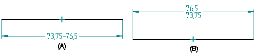
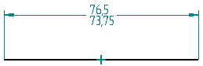
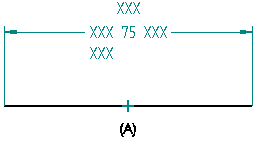
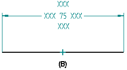
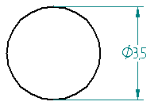
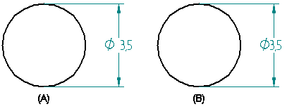

Saving to AutoCAD
You can use the AutoCAD Translation Wizard to save Solid Edge documents to AutoCAD format. The wizard maps entities, such as line type, line width, font, and hatch style, in a Solid Edge document to an AutoCAD document. If you want to save a Solid Edge Draft file to AutoCAD (.dxf or .dwg) format and the file contains OLE objects such as a Word or .bmp document, you must save the file first. If you do not save the draft file, the OLE objects will not be translated to AutoCAD format.
Any text profiles in the draft file are exported to AutoCAD.
Exporting Solid Edge multiline text boxes to AutoCAD
You can use the Export Multiline Text As Multiline Text parameter in the seacad.ini file to control how Solid Edge exports multiline text. By default, the parameter is set to 1, which exports multiline text boxes as multiline text box. You can set the value to 0 if you want to export the text boxes as single line text boxes.
Exporting Solid Edge symbols to AutoCAD
You can use the new Remove dependency of Solid Edge Fonts option on the Solid Edge to AutoCAD Translation Wizard - Step 5 of 7 to remove the dependency of Solid Edge fonts during export. When you select this option, Solid Edge exports mechanical symbols using AutoCAD fonts rather than Solid Edge fonts.
As an alternative, you can use the Export Mechanical Symbols using AutoCAD parameter in the seacad.ini file to control how Solid Edge exports draft symbols to AutoCAD. By default, the parameter is set to 0, which simply uses the Solid Edge ISO font.
If you set the value to 1, Solid Edge substitutes the mechanical symbol font, Solid Edge ISO\ANSI GDT Symbols.ttf file, with the Autodesk mechanical symbol font GDT.ttf file.
The AutoCAD GDT font does not support all of the symbols provided in the Solid Edge ISO\ANSI GDT Symbols.ttf. In these cases, the mechanical symbols are drawn as simple lines and arcs. Click here for a list of the symbols that are drawn.
Exporting drawing view borders to a specific layer in AutoCAD
When exporting to paper space, you can export drawing view borders to a specific layer in AutoCAD.
Exporting custom line types to AutoCAD
You can use the Solid Edge to AutoCAD Translation Wizard (Line Type Mapping) to assign a Solid Edge custom line type to a specific AutoCAD line type.
For more information see Solid Edge to AutoCAD Translation Wizard (Line Type Mapping).
Exporting Solid Edge dimensions as AutoCAD dimensions
Because of differences in CAD systems and the large number of possible dimension styles that can be created, you can easily create a dimension in one system that cannot be displayed in another. The Export Solid Edge Dimensions as AutoCAD Dimensions and the Export Dimension Picture Data options on the AutoCAD Translation Wizard help you to avoid these problems and create dimensions that appear the same in Solid Edge and AutoCAD.
An AutoCAD dimension consists of three parts:
-
Dimension block or picture data
-
Dimension object
-
Dimension style object
The dimension block or picture data contains lines, arcs, and points that make up the dimension. The dimension object contains information about the dimension attributes, such as layer, color, definition points, and pointers to the dimension block data and dimension style object. The dimension style object contains various dimensioning variables such as tolerances, formats, and unit type.
When you open a drawing in AutoCAD, the dimension block, or picture data is displayed. If you change the dimension in AutoCAD, the picture data is deleted. AutoCAD regenerates the display based on the dimension object and the dimension style object. This may cause the dimension in AutoCAD to change based on the style and dimension limitations between the two CAD systems. You can use the Export Dimension Picture Data option on the AutoCAD Translation Wizard to avoid this problem and maintain the appearance of a Solid Edge dimension as long as the dimension is not regenerated in AutoCAD.
If you export a Solid Edge document with the Export Dimension Picture Data option on the AutoCAD Translation Wizard enabled, Solid Edge writes the block or picture data to the AutoCAD document. When you open the AutoCAD document, the dimensions will appear as they would in Solid Edge.
If you export a Solid Edge document with the Export Dimension Picture Data option on the AutoCAD Translation Wizard disabled, Solid Edge does not write the block or picture data to the AutoCAD document. When you open the AutoCAD document, AutoCAD generates its own picture data to create an AutoCAD-like dimension.
If you are exporting to .dxf format, but do not intend to open and save these documents in AutoCAD, you should enable the Export Dimension Picture Data option. If the target system is dependent on any of the block or picture data, it cannot successfully read and display the dimension correctly if the picture data is not exported. The target CAD system must be able to generate the dimension based only on the dimension object and dimension style information.
If you export a Solid Edge document with the Export Dimension Picture Data option disabled and force AutoCAD to regenerate the picture data, you may see differences in:
-
Radial or diameter dimensions
-
Limited dimensions
-
Prefixes and suffixes
-
Alternate units
Limit dimensions
Solid Edge allows you to create a horizontal limit dimension (A) and a vertical limit dimension (B).

AutoCAD supports only horizontal limit dimensions. When you export Solid Edge dimensions as AutoCAD dimensions, the vertical limit dimensions will appear as horizontal limit dimensions in the AutoCAD document.

Prefixes and suffixes
When you export dimensions as dimension objects superfixes, prefixes, suffixes, and subfixes are written as text overrides. In Solid Edge, you can set a left or centered justification when placing a subfix on a dimension. However, AutoCAD only supports a centered justification for text overrides. Therefore all dimensions created in Solid Edge with a subfix that has a left justification (A) are exported to AutoCAD as a text override, and will have a centered justification (B).


Alternate units
Solid Edge allows alternate units that can be ( ), Null, or [ ]. AutoCAD only supports [ ], so all alternate units in Solid Edge will be displayed a [ ] in AutoCAD.
Exceptions when exporting Solid Edge dimensions as AutoCAD dimensions
There are a few exceptions when you export Solid Edge dimensions as AutoCAD dimensions:
-
Dimensions with jogs
-
Dimensions with space value between dimension and tolerance
-
Radial dimension with space between symbol and its value
-
Diametric dimensions with space after diameter symbol
-
Radial and diametric dimensions after text
Any dimension with a jog is exported as simple lines and text to represent the dimension just as if the Export Solid Edge dimensions as AutoCAD Dimension control was disabled.
AutoCAD does not have a parameter similar to the Solid EdgeHorizonal Tolerance Gap parameter to store a gap between the dimension and tolerance.
In Solid Edge you can create radial or diameter dimensions and specify that the diameter symbol be displayed before the diameter value, after the diameter value, or not all. AutoCAD only allows you to display the diameter or radial symbol before the value. When you export Solid Edge dimensions as AutoCAD dimensions the diameter symbol will always be displayed preceding the diameter value.

Solid Edge creates a space (A) between the dimension value and the dimension symbol to make it easier to read. AutoCAD does not support this and removes the space (B) between the dimension value and the dimension symbol when you export the Solid Edge document.

How do I
Export one or all sheets to AutoCADLook up more details
Solid Edge to AutoCAD Translation WizardSolid Edge to AutoCAD Translation Wizard (Model Space Scaling)
Solid Edge to AutoCAD Translation Wizard (Line Width Mapping)
Solid Edge to AutoCAD Translation Wizard (Line Type Mapping)
Solid Edge to AutoCAD Translation Wizard (Layer Mapping)
Solid Edge to AutoCAD Translation Wizard (Font Mapping)
Solid Edge to AutoCAD Translation Wizard (Hatch Style Mapping)
Solid Edge to AutoCAD Translation Wizard (Configuration File Mapping)
Solid Edge to AutoCAD Translation Wizard (File Mapping)
Solid Edge to AutoCAD Translation Wizard (Model Space Scaling)